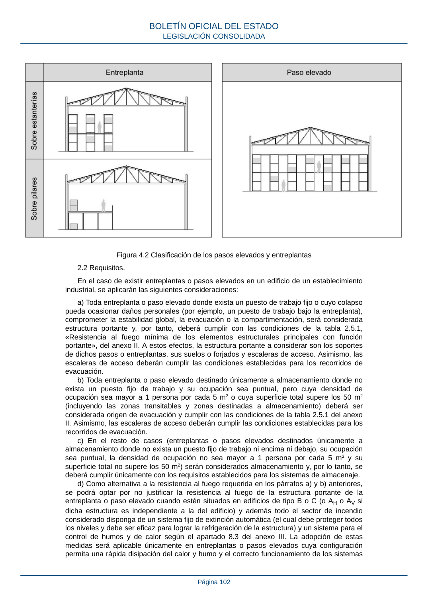

RSCIEI · Página 102 · versión 2025-04-10
SHA256: 85aa0af25d51e5b58d8975a4eefbf76d3f57a8933445cfe814ae9c4818a2e3e7 · página física 102 de 108 · métodos de encabezado
solo si están cotejados.
Documento · ← p. 101 · p. 103 →
Formatos: Markdown · JSON de bloques · PDF p. 102 · imagen PNG
Figura 4.2 Clasificación de los pasos elevados y entreplantas 2.2 Requisitos. En el caso de existir entreplantas o pasos elevados en un edificio de un establecimiento industrial, se aplicarán las siguientes consideraciones: a) Toda entreplanta o paso elevado donde exista un puesto de trabajo fijo o cuyo colapso pueda ocasionar daños personales (por ejemplo, un puesto de trabajo bajo la entreplanta), comprometer la estabilidad global, la evacuación o la compartimentación, será considerada estructura portante y, por tanto, deberá cumplir con las condiciones de la tabla 2.5.1, «Resistencia al fuego mínima de los elementos estructurales principales con función portante», del anexo II. A estos efectos, la estructura portante a considerar son los soportes de dichos pasos o entreplantas, sus suelos o forjados y escaleras de acceso. Asimismo, las escaleras de acceso deberán cumplir las condiciones establecidas para los recorridos de evacuación. b) Toda entreplanta o paso elevado destinado únicamente a almacenamiento donde no exista un puesto fijo de trabajo y su ocupación sea puntual, pero cuya densidad de ocupación sea mayor a 1 persona por cada 5 m2 o cuya superficie total supere los 50 m2 (incluyendo las zonas transitables y zonas destinadas a almacenamiento) deberá ser considerada origen de evacuación y cumplir con las condiciones de la tabla 2.5.1 del anexo II. Asimismo, las escaleras de acceso deberán cumplir las condiciones establecidas para los recorridos de evacuación. c) En el resto de casos (entreplantas o pasos elevados destinados únicamente a almacenamiento donde no exista un puesto fijo de trabajo ni encima ni debajo, su ocupación sea puntual, la densidad de ocupación no sea mayor a 1 persona por cada 5 m2 y su superficie total no supere los 50 m2) serán considerados almacenamiento y, por lo tanto, se deberá cumplir únicamente con los requisitos establecidos para los sistemas de almacenaje. d) Como alternativa a la resistencia al fuego requerida en los párrafos a) y b) anteriores, se podrá optar por no justificar la resistencia al fuego de la estructura portante de la entreplanta o paso elevado cuando estén situados en edificios de tipo B o C (o AH o AV si dicha estructura es independiente a la del edificio) y además todo el sector de incendio considerado disponga de un sistema fijo de extinción automática (el cual debe proteger todos los niveles y debe ser eficaz para lograr la refrigeración de la estructura) y un sistema para el control de humos y de calor según el apartado 8.3 del anexo III. La adopción de estas medidas será aplicable únicamente en entreplantas o pasos elevados cuya configuración permita una rápida disipación del calor y humo y el correcto funcionamiento de los sistemas BOLETÍN OFICIAL DEL ESTADO LEGISLACIÓN CONSOLIDADA Página 102
